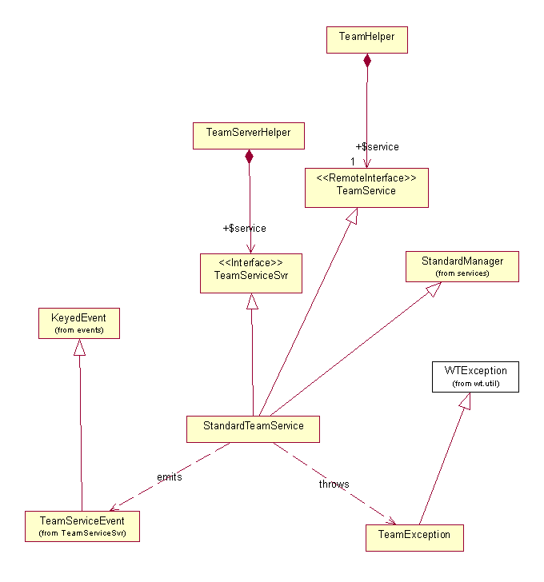
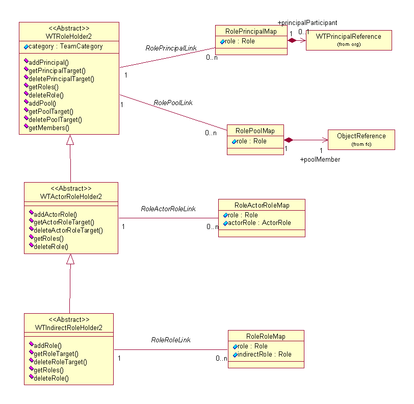

See: Description
| Interface | Description |
|---|---|
| RoleHolder2 |
RoleHolder is an interface for classes implementing role to principal
mappings
Supported API: true Extendable: false |
| TeamService |
TeamService provides client invokable methods to team services.
|
| Class | Description |
|---|---|
| _TeamCategory | |
| RoleActorRoleMap |
Use the
newRoleActorRoleMap static factory method(s), not
the RoleActorRoleMap constructor, to construct instances
of this class. |
| RolePoolMap |
Use the
newRolePoolMap static factory method(s), not the
RolePoolMap constructor, to construct instances of this
class. |
| RolePrincipalMap |
Use the
newRolePrincipalMap static factory method(s), not
the RolePrincipalMap constructor, to construct instances
of this class. |
| RoleRoleMap |
Use the
newRoleRoleMap static factory method(s), not the
RoleRoleMap constructor, to construct instances of this
class. |
| TeamCategory |
TeamCategory is a specialization of
EnumeratedType to provide
localizable team category names The localized values for team categories
are maintained in a resource bundle RoleRB, and its locale
derivatives |
| TeamHelper |
TeamHelper provides client invokable meethods to team services.
|
| TeamRoleHolderProcessorService |
When executed from a class that extends BasicTemplateProcessor, these
script call can be invoked by using the 'useProcessorService service
= ' html template entry.
|
| TeamServiceEvent |
Provides a service specific event extended from KeyedEvent used in conjunction
with the standard implementation of the server-side functionality as
defined by the TeamService interface.
|
| WTActorRoleHolder2 |
Supported API: true Extendable: false |
| WTRoleHolder2 |
Supported API: true Extendable: false |
The Team Managed Service provides the ability to create roleholders
that map participants to roles. This package provides TeamTemplates and Teams
that are used by the Windchill System to manage participation in Workflows and
Life cycles.

The team service is designed
to be a plug-and-play component in the Windchill system and is intended to be
used for both client and server development.�
Business objects, asserted as being TeamManaged and Advanced Lifecycle
Managed have a team created for it and assigned to it during the PRE_STORE
event processing.
The TeamManaged interface provides an abstraction of a plug-and-play
component. The intent is that, in an object model, a business object
would assert
that it is TeamManaged by inheriting (that is, it implements) the
TeamManaged interface. With this assertion, the business object can have
an association to a team template and team.
The TeamHelper provides an abstraction as the API to the team service.
The API�s methods can be categorized as either local or remote
invocations. The
local methods are getters of information.� The remote methods serve as wrappers to a service
that
promotes server-side functionality.
The TeamServerHelper provides an abstraction of the server-side API to
the
team services. These methods can be invoked only from server-side
processing.
The TeamService provides an abstraction that specifies and promotes
server side
functionality as a service that is remotely available for use by a
client. This
interface is intended to define all the necessary server-side
functionality for team management.
The TeamServiceEvent provides an abstraction of a specialized keyed
event
used by the team service to signal other services that something has
occurred.
This gives other services in a plug-and-play architecture the
opportunity to act
accordingly upon these events. Validation, vetoing, and post-processing
are
typical reactions to events.
The team service emits the following event:
RETEAM
The reteam event is emitted whenever the reteam API is called.� The reteam API reassigns the team template of
the object and re-resolves the team membership.
The TeamException provides an abstraction of an abnormal occurrence or
error in the usage or processing of the team service. This exception
can be
localized through a given resource bundle, and other exceptions can be
nested
within it.
The team service is an event listener. The service listens for and acts
upon the
following standard Windchill events:
CLEANUP_LINK
When a CLEANUP_LINK event is emitted for a team link object, the
associated objects are cleaned up in the database.
REPLACE_MEMBER
When a REPLACE_MEMBER event is emitted, any role-principal mappings for
the user in the container and associated teams are reassigned to the new user.
PRE_CHANGE_DOMAIN
When a PRE_CHANGE_DOMAIN event is emitted for Windchill PDM, the
objects team is moved to the new domain of the object.
PRE_DELETE
When a PRE_DELETE event is emitted for Windchill PDM, the team
associated to the object is deleted if it is not shared by another team managed
(excluding workflow processes) object.

Team Template:� The team
template is a WTActorRoleHolder2.� This
means it can have role-principal mappings and role-actor role mappings.� It is used out of the box as a template to
create a team instance that is used by lifecycle and workflow to determine
participants for a particular role.
Team:� The team is a WTRoleHolder2.� This means it can only have role-principal
mappings.� During the PRE_STORE
processing, advanced life cycle managed objects will have a team created and
assigned to it if the object is not already assigned to a team.
Role resolution: �When the team is created, the
team is resolved from the team template and life cycle phase template
roles.� In the case of PDMLink, the
context team role members are also added to the team.� Team template role mappings take precedence
over the lifecycle phase template roles.�
That is, if a role exists in both, only the team template membership
will be resolved into the team.
Example:� An object is created by Mary.� Here are the role mappings for the team
template, phase template and the resulting team.
|
Role |
Team Template |
Phase Template |
Team |
|
Reviewer |
Tom, Dick, Jane |
---- |
Tom, Dick, Jane |
|
Change Owner |
--- |
Reviwer |
Tom, Dick, Jane |
|
Designer |
Creator Actor Role |
Change Owner |
Mary |
This service provides a multi object API to create teams for a list of objects.� The API signature is:
WTList createTeams( WTList
objects, List names, WTRoleHolder2 roleHolder )
This API returns a list of
teams created for the object.� The names
list can be null;
Example:� You want to create a list of
teams for some documents and assign them to the objects prior to persisting the
objects.
WTList docs=new
WTArrayList();
for (int i=0; i <
docNumber; i++) {
�� docs.add(createDocument(�..);� //create document returns a non persisted
document to you.
}
TeamTemplate
template=TeamHelper.service.getTeamTemplate(container, name);
WTList
teams=TeamHelper.service.createTeams(docs, null, template);
//now assign the object the
team and team template
iterator= teams.persistableIterator();
int count=0;
�try {
��������� while (iterator.hasNext()) {
������������ TeamManaged object=(TeamManaged)iterator.next();
������������ TeamHelper.setTeamTemplate(object,
template);
� �����������TeamHelper.setTeam(object,
(Team)list.getPersistable(count++));S
�������� }
� }
catch
(WTPropertyVetoException e) {
��������� e.printStackTrace();
}
//Now save the objects
PersistenceHelper.manager.store(docs);